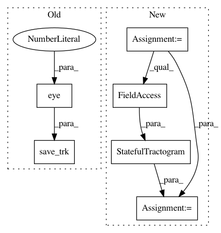

23a07e8601cbdba5ece453864bc6d11e3431543e,dipy/workflows/tests/test_segment.py,,test_recobundles_flow,#,50
Before Change
f.extend(f2)
f2_path = pjoin(out_dir, "f2.trk")
save_trk(f2_path, f2, affine=np.eye(4))
f1_path = pjoin(out_dir, "f1.trk")
save_trk(f1_path, f, affine=np.eye(4))
After Change
f.extend(f2)
f2_path = pjoin(out_dir, "f2.trk")
sft = StatefulTractogram(f2, data_path, Space.RASMM)
save_tractogram(sft, f2_path, bbox_valid_check=False)
f1_path = pjoin(out_dir, "f1.trk")
sft = StatefulTractogram(f, data_path, Space.RASMM)
In pattern: SUPERPATTERN
Frequency: 3
Non-data size: 6
Instances
Project Name: nipy/dipy
Commit Name: 23a07e8601cbdba5ece453864bc6d11e3431543e
Time: 2019-07-23
Author: francois.m.rheault@usherbrooke
File Name: dipy/workflows/tests/test_segment.py
Class Name:
Method Name: test_recobundles_flow
Project Name: nipy/dipy
Commit Name: 23a07e8601cbdba5ece453864bc6d11e3431543e
Time: 2019-07-23
Author: francois.m.rheault@usherbrooke
File Name: dipy/workflows/tests/test_align.py
Class Name:
Method Name: test_slr_flow
Project Name: nipy/dipy
Commit Name: 4acaccc303fa97885355c84e9146b7bc45203443
Time: 2019-07-26
Author: francois.m.rheault@usherbrooke.ca
File Name: doc/examples/tracking_introduction_eudx.py
Class Name:
Method Name: